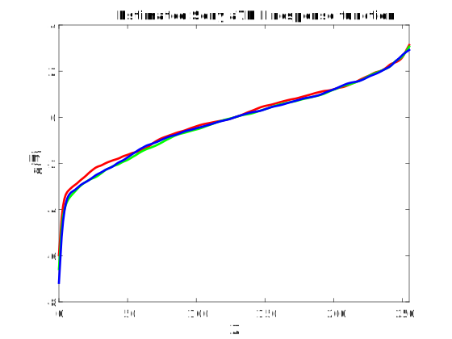
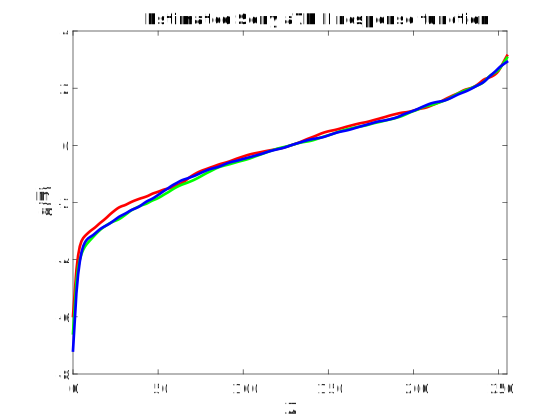

Mobile Camera Image Quality Enhancement with pix2pix
Xiaotian Le (xle2) & Sihao Chen (schen149)
CS 445 Final Project, Fall 2017
Introduction
Motivation
Since the first introduction of smartphones to the world, integrated mobile digital cameras have gained wide popularity.
Photography is more accessible than usual thanks to mobile digital cameras' advantage in compactness over many professional digital cameras.
However, due to their limitation in physical size, mobile digital cameras often delivers inferior performance
in image capturing compared to professional digital cameras that are larger in size. Compared to the high quality images captured by professional digital cameras,
images captured by mobile digital cameras suffers from information loss. We believe that there three major causes to this:
(1) Limited dynamic range (2) Smaller sensors are more sensitive to electronic circuit noises (3) Diffusion blur from smaller aperture
Here we provide two example images we captured under similar conditions using a full-frame mirrorless camera and a compact form-factor camera. We can see that the dynamic range of the first image is clearly higher than the second image. Also, sharpness of the first image from visual perception is higher than the second image. If we look a little closer, the light on the ceiling causes significant diffusion blur in the second image.
Aperture: f/8
Shutter speed: 1/8 s
ISO: 100" />
Shutter speed: 1/30 s
ISO: 110" />
In this project, we investigate each of the three causes and attempt to use neural method to recover low quality images that suffers from each type of information loss.
Tools Utilized
For this project, we use the pix2pix system proposed in Image-to-Image Translation with Conditional Adversarial Networks for translation bewteen a low quality image to its high quality variant. All images we used for training and validation purposes are captured by either Xiaotian or Sihao. No external dataset or image were involved during our experiments.
Pictures used in this web page, if not referenced or indicated, also belong to either Xiaotian or Sihao.
We developed our code for dataset preparation in MatLab. No external libraries were used during the process.
We use the existing pix2pix-tensorflow implementation of pix2pix in TensorFlow available on GitHub.
Source Images
Landscape scenes often have a wide dynamic range. Therefore, we use as source images a total of 183 landscape images taken in Yellowstone National Park with Sony a7R II, which is capable of producing images with a fairly wide dynamic range. All images are then resized to \(256 \times 256\), so that model training doesn't take weeks to finish. 153 of them are used as the training set, while the remaining 30 are used as the validation set.
Here are some examples.
HDR Recovery
We first attempt to train a model to convert low DR camera images into higher DR camera images. To achieve that the model must not only learn the new tone curve, but also learn to fill the missing shadow and highlight details based on the low DR image and its own knowledge. After prolonged training and trials, we have a model performing fairly well at this task.
Dataset Generation
To get pairs of images with one from a high DR camera and another from a low DR camera,
we attempt to convert images originally from the high DR camera (input images) to simulate the shots from the low DR one (output images).
We noticed that camera response functions incorporates characteristics of the camera's DR,
as cameras with lower DR will have a narrower function domain to hide highlight clipping and shadow noise.
Meanwhile, irradiance values, ignoring highlight clipping and shadow noise, should be the same for both cameras.
Therefore, it is natural to apply the inverse high DR camera response function to the input image to find the irradiance values,
and then the low DR camera response function to get the output image.
$$Z_{low} = c(Z_{high}) = g_{low}^{-1}(g_{high}(Z_{high}))$$
We use the method in Project 4 to find the inverse camera response functions \(g\).
Here are the estimated inverse response functions for Sony a7R II and GoPro HERO4.
Note that the one of a7R II has a much larger range.
 

We then use pchip interpolation on \(g_{low}\),
and fzero on it to find its inverse function values.
Note that \(z_{low}\) clips to 0 or 255 for extreme \(z_{high}\) values,
indicating that the low DR camera image loses information.
We apply \(c\) to the source images to get the image pairs for training.
Here is an example training image,
with the high DR image on the left and the low DR image on the right.
Note that grass field falls to black and some part of the sky clips to pure white.
Training
We use TensorBoard to monitor training statistics. We run the model on the validation set to manually inspect the results for every 20 epochs.
Validation Set Results
After 20 epochs, the model learns a tone curve to adjust to the target images.
After 100 epochs, it successfully learns to fill the missing details, with many natural details.
Here are some example validation set results. Move mouse onto the images to check the types of them.
The 100-epoch model manages to fill clouds into the sky highlights. Though some of the clouds are not there in the target image, they certainly make sense. It also fills texture details into the vast areas of shadows.
The 100-epoch model manages to fill tree textures into the tree shadows. It also fills some imaginary clouds into the sky highlights, which could have been there, while the 20-epoch model doesn't.
The 100-epoch model learns to reduce the intensity of the pure white sun highlight, which the 20-epoch model fails. It also fills mountain and grass details into the shadows.
The 100-epoch model manages to fill stone-like textures into the mountain and ground shadows. Though some of the textures might not be present in the target image, they look natural.
Noise Reduction
Dataset Generation
To simulate the electronic circuit noise of images captured under high ISO settings, we first generate a zero-mean Gaussian white noise image with fixed variance at every pixel. To mimic the process of demosaicing interpolation of bayer filter, we designed the filter shown in the figure below based on the observation that the value of a given pixel is most correlated with (1) itself; (2) its four adjacent pixels.
We apply this filter to the noise image we generated and add the result to the original image to obtain our simulated noisy image.
Here we show the comparson between the original image (Before) and our simulated result (After)
Comparson between high ISO image (Before) and our simulated result (After)
Training
...
Results
...
Diffraction Blur Reduction
Dataset Generation
...
Training
We obtain the most satisfactory results after 120 epochs of training.
Validation Set Results